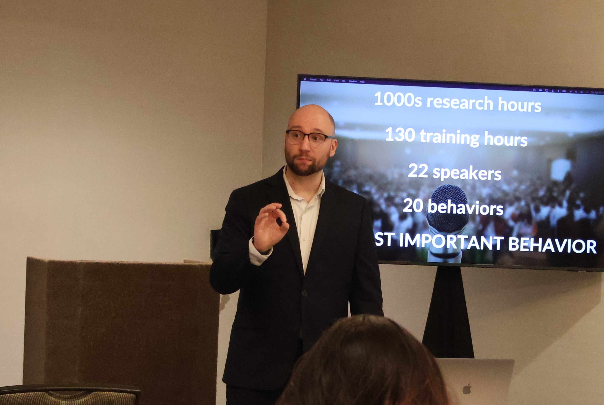

Dr. Matthew Laske is currently an Assistant Professor in the Department of Behavior Analysis at the University of North Texas. Matthew is the Director of the Organization and Communication Sciences Laboratory.
Matthew obtained his Ph.D. in Behavioral Psychology at the University of Kansas under the advisement of Dr. Florence DiGennaro Reed. He obtained his M.A. in Industrial-Organizational Psychology and Human Resource Management and a graduate certificate in Data Analytics at Appalachian State University with Dr. Tim Ludwig. Matthew completed his Bachelors in Behavioral Science at Western Michigan University.
Dr. Laske's research program centers on organizational behavior, communication sciences, and occupational safety, with a particular emphasis on public speaking, dissemination, and applied workplace interventions. He has authored one book (The Science and Best Practices of Behavioral Safety), nine peer-reviewed articles, and seven book chapters. His work spans both basic and applied contexts, from large-scale safety interventions in industry to public speaking coaching and training.
Prior to joining UNT, Dr. Laske worked as a behavioral safety and data specialist at Eastman Chemical Company, where he helped design and implement an adaptive behavioral observation system that significantly reduced workplace injuries. He continues to consult nationally and internationally, including invited presentations for organizations such as Marathon Petroleum and Eastman Chemical, and workshops at professional conferences like ABAI and TxABA.
His contributions have been widely recognized. Dr. Laske was recognized as a 2025 Rising Star of Safety by the National Safety Council. He was winner of the inaugural Aubrey Daniels: Outstanding Applied Intervention Award from the OBM Network, and honored with the Baer, Wolf, and Risley Outstanding Graduate Student Award from the University of Kansas. He has also received the Applied Behavioral Science Graduate Award for Excellence in Research and the KansABA Distinguished Service Award.
Dr. Laske is active in professional service as a member of the Editorial Board for the Journal of Organizational Behavior Management, as an Associate Commissioner for the Cambridge Center for Behavioral Studies (CCBS) Behavioral Safety Accreditation Commission, and as a former Distinguished Scholar of CCBS. He has presented at more than 50 conferences, workshops, and trainings across the U.S. and internationally.
At UNT, Dr. Laske teaches across undergraduate, master's, and doctoral programs, including Organizational Behavior Management (BEHV 3300), Staff Training and Supervision (BEHV 5570), Introduction to Behavior Analysis (BEHV 5100) and The Dissemination and Application of Behavior Analysis (BEHV 6410). He is deeply committed to mentoring the next generation of researchers and practitioners in organizational and communication sciences.